Article
Introduction
Sports analytics has grown from some fan’s obsession to the forefront of how professional teams make decisions. Baseball analytics especially have been a trendsetter within the broader sports analytics umbrella. The book and movie Moneyball brought this unique way of making decisions to the populous and since then, it has transformed Major League Baseball and other leagues have followed. In years past, scouts would make decisions with the “eye test” and basic statistics such as batting average, RBIs, and home runs for hitters, as well as ERA, strikeouts, and wins for pitchers. Billy Beane and his staff with the Oakland A’s transformed this process by looking at different statistics and using them above the supposed infallible “eye test.” Since then other teams have begun to implement these same methods as it helps the teams make better decisions. The whole idea is using past data to make projections about the future performance of a player. One of the biggest decisions a team makes during a player’s career is when to call them up from the minor leagues. A well-timed call-up can lead to an extremely successful career, but if the player struggles to begin with it can lead to a cycle of not believing in themselves. In a sport like baseball where “failure” is so common (a great player fails 70% of the time) it is important to keep one’s head up. Thus, it would be great to see if teams could project success based on the minor league statistics. These stats are player’s first experience in professional baseball, so they should be able to provide some semblance of predictions on the success of their major league careers.
For our project, we have decided to see if we can predict whether a player will eventually make it to an All-Star game based solely on their performance in the minor leagues. The data set used for this analysis was purchased from the website thebaseballcube.com the All-Star data that is being used for our outcome variable was scraped from the baseball almanac. In the purchased data set, all minor league baseball seasons from 1977 until 2023 are included. The variables in each observation cover individual player information, player statistics, and team information for each individual season. This data covers all levels of the minor leagues (AAA, AA, A, Rok) and has player IDs to ensure that you can access different players with the same name.
Description of Data
For the scope of our project, we needed data concerning All-Star appearances as well as a comprehensive list of minor league stats. The process of gathering these two data sets involved different sources and formats. As mentioned previously, the minor league data was obtained from the Baseball Cube data store, provided in CSV format, facilitating direct upload into R for analysis. Upon receipt, the batting dataset consisted of 210,057 observations across 38 variables, while the pitching dataset contained 185,495 observations spread across 41 variables.
Conversely, the All-Star data was procured through web scraping from the Baseball Almanac website. Initially copied into an Excel format, it was subsequently converted into CSV for integration into R. This dataset originally encompassed 5,308 lines of data, each line representing a specific All-Star appearance, with player names merged into cells alongside their respective game appearances. The subsequent data cleaning and preparation for analysis involved meticulous steps, which will be elaborated upon in later discussions.
List of Variables
Ex. of Batting Data (prior to cleaning):
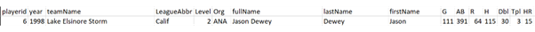
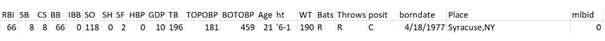
Ex. of Pitching Data (prior to cleaning):
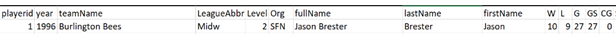
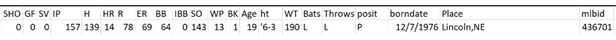
Preprocessing Data
Due to the two datasets being from different websites, the biggest challenge prior to the analysis was combining these two sets of data. A benefit about the minor league stat data set is that it has individual player IDs, so two players with the same name can be differentiated. We will first discuss the data cleaning done before uploading it to R, and then we will discuss the data cleaning done within R.
Excel Data Cleaning
In the process of organizing the All-Star data set, several steps were taken. Initially, the data had a list of names with each name having the list of All-Star games that they participated in. We copied the name down so that each person’s name was next to a unique All-Star game, rather than a merged cell next to a list of years. The list of names was then organized by year and all years before 1977 were deleted. This was because the minor league stats only went up until 1977 so it was impossible for any All-Star in the years before 1977 to have any minor league stats listed in the data set.
In parallel, the Minor League dataset had to be edited before uploading to R. First, all the pitchers were removed from the batting data and the non-pitchers from the pitching data. In the minor leagues, there are many different levels, currently classified as AAA, AA, A+, A, A- and Rookie. The intricacies of the class A classification though have changed multiple times since 1977 so to make it even across the time of our dataset we classified all types of class A as A. For each individual, we had a first name and last name column so we combined these two in Excel to form a full name column. Knowing that we also would need to combine all the levels, in R, we deleted all of the rate stats (BA, OBP, SLG, & OPS for batters and ERA, h9, hr9, bb9, so9, & WHIP for pitchers) and added counting stats that would make calculating these rate stats within R easier. Total Bases (TB) which is calculated by (HR*4 + 3B*3 + 2B*2 + 1B*1). The numerator for OBP (H + BB + HBP). The denominator for OBP (AB + BB + HBP + SF). For pitchers, innings pitched are noted by .1 as a third, .2 as two-thirds, and .0 as a whole inning. This does not lend itself to easy calculation, since mathematically .1 does not equal 1/3. To solve this problem, we separated the innings pitched and multiplied the decimals by 1/3, then added the innings together. This data was then ready to enter into R.
R Data Cleaning
The All-Star data set was then uploaded to R and the remaining values were restricted to ASCII due to the initial hyperlink formatting that was copied from Baseball Almanac. Then, names from this data set were used to find IDs for each player in the All-Star data set. These IDs were added to each player that played in an All-Star game. Afterward, the data was read back into CSV format, because some names were not found for players that were active recently. Entries that did not automatically match usually were a junior or had an abbreviated first name, such as Ronald Acuna Jr or CC Sabathia, were manually added. There were about 350 entries that needed to be edited. Some of these players lacked minor league stats but participated in All-star games post-1977, so they were removed. Then the ID from the minor league data set for each player that was found was added. As there might be multiple people with the same name and we are matching player ID to the name in the All-Star dataset it is important to check to see which names are duplicates. This will only matter if there are duplicates and one is an All-Star and another is not. Two examples are Nelson Cruz and Justin Turner, both are All-Stars, but there were minor league players with the same name that did not make an All-Star appearance. To ensure that we matched the ID with the correct stats, we made a list of all the players with a unique ID, found all of the names that were duplicates that were also in the All-Star data set and then ensured that the correct ID was used. The cleaned All-Star data was then imported back into R.
Upon transferring the minor league data to R, certain columns such as year, team name, league abbreviation, organization details, and personal attributes like height, weight, batting and throwing preferences, position, birth date, and birthplace were discarded. To ensure that we use all possible players in our data, we created a 2023 active dataset using all players that had a 2023 major or minor league season, using data from the baseball cube. This way all players that were not active could be assigned a final judgment on whether or not they were an MLB All-Star. The All-Star data was then appended to both pitching and hitting datasets, assigned as binary outcomes where every All-Star player received a value of 1 and non-All-Star players inactive in 2023 received 0, while those who were active but had not yet achieved an All-Star appearance were designated for prediction purposes. Subsequently, player statistics were aggregated across levels, employing a weighted sum method to generate a single line for each player. The weight for each line was determined by the minor league level those statistics were compiled at. The higher the level, the more difficult the competition and therefore a higher weight. $ was assigned to AAA, 3 to AA, 2 to A, and 1 to Rk. Finally, rate statistics were reintroduced into the dataset, with batting metrics such as BA, OBP, SLG, SO/AB and OPS, and pitching metrics including ERA, hits per 9 innings, walks per 9 innings, home runs per 9 innings, strikeouts per 9 innings, and WHIP calculated and appended to the data in R. These were calculated with the weighted counting stats using the basic equation for each of the stats. Then all of the counting stats were removed because they have lost their interpretability due to the weighting and the rate stats include most of the individual counting stats, so all of the information included in the counting stats is included in the rate stats. Notably, the batting and pitching datasets remained separate throughout this process.
Post Data Cleaning
After the data was cleaned and combined, we were left with four CSV files. The two training files contain pitchers and hitters who have made an All-Star game or are no longer active while the two new files contain active players who have not made an All-Star game appearance. There are 43057 individual players in the training batting file while there are 37164 individual players in the pitching training file. The new files contain the players that the models will be making predictions about. There are 4475 players in the batting file and 5007 players in the pitching file.
EX. of Batting Data (post cleaning):
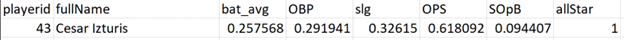
EX: of Pitching Data (post cleaning):
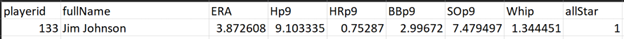
Exploratory Data Analysis
The distributions and summary statistics between all batters and future All-Star batters are fairly similar, but as expected, are slightly better for the All-Stars. This is seen by the fact that the quartiles, means, and medians are slightly better across statistics. Future All-Stars performed better on average than their non-All-Star peers across all of the rate statistics compiled. For each of these main rate statistics, a two sample t-test was completed to see if there was a statistically significant difference between the means of these stats for non-All-Stars and the All-Stars. Below is the summary table listing the t-value outcome for each test. As can be seen these results suggest a statistically significant difference between the performance of future All-Star and non-future All-Star batters during their minor league years.
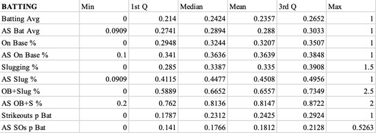
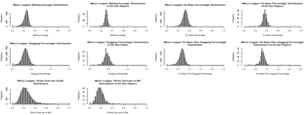
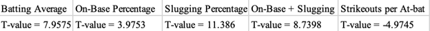
Similar to the batting statistics, the future All-Star statistics are slightly better than the non-future All-Star players. As a pitcher, you want all of these values to be lower, with the exception of “Strikeouts per 9”, which pitchers want to have higher rates of. Future All-Stars perform better in each of these stats with the exception of the 1st quartile and median of “Home Runs per 9”, which are higher for future All-Star pitchers. As with the batting statistics, t-tests were done to test if there was a statistically significant difference between the All-Stars and non-All-Stars. As can be seen, just as with the batters, the t-scores that result from each of the respective t-tests suggest that there is a statistically significant difference between the All-Stars and non-All-Stars.

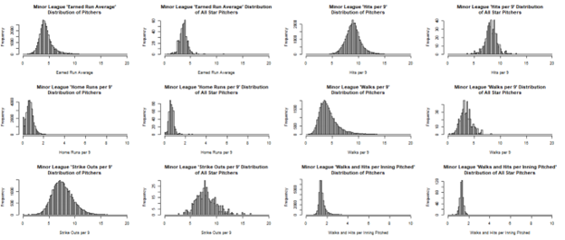
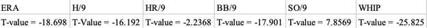
Modeling Approaches
A major struggle with this data set is the imbalance it has. This imbalance just means that 1.75% of the hitters are All-Stars and 1.55% of the pitchers are All-Stars. This will cause models to be biased towards the majority class and will make it difficult to make accurate predictions. That being said, it is important to see how the models will interpret the data especially since there are statistically significant differences between the means of the different data. In our analysis, we will use some simple methods and a few complex ones to compare the efficacy, efficiency, and results.
Probit & Logit Regression
The two models we will first discuss are logit and probit regression. These models will be used because they are simple models that are useful for classification data sets. They are general linearized models, are easy to implement on large datasets with few variables, and are easy to interpret. If the result is above 0.5 classify it as 1 if below classify it as 0. These two are used because we wanted to have a baseline for future predictions and ensure that we were getting viable predictions even with a basic model. Since the batting data only has five variables and the pitching data has six, these basic models might predict better than the advanced models. These models were used because they provide simple results and are great for initial analysis and understanding how the variables relate to the outcome.
Logit training MSE Pitching = 0.0155
Probit training MSE Pitching = 0.0155
Logit training MSE Batting = 0.0159
Probit training MSE Batting = 0.0163
KNN
The next model used was KNN. Since the dataset is imbalanced, KNN can be incredibly helpful because it makes class decisions on the nearest neighbors, not the overall distribution. This is helpful when the relationship is non-linear and while it makes sense for the variables to be linearly related to the outcome, higher batting average leads to higher probability, it is important to test non-linearity in this data set. The only way that KNN will be able to effectively predict values, though, is if you make sure that K is small enough that it does not capture the general imbalance in the dataset. To implement this we ran a 10-fold cross validation that allowed us to see the error rates for a variety of ks. At large k values the average error converged to 0.0175 because it was predicting all players as non-All-Stars. As can be seen in the image on the right, at around k = 20 the error rate is the same. To ensure we get some predictions classified as 1, we used k = 5 and k = 10 for our predictions on the new dataset. We wanted to make sure that we were capturing the elbow in the error rate in this graph, so decided to make predictions using both of these values. For pitching, the data was quite different and k = 1 was the only K that allowed us to get more than a few predicted All-Stars back, but it is known K=1 is not a reliable nearest neighbors value.
K5 training 10-fold MSE Pitching = 0.0157
K10 training 10-fold MSE Pitching = 0.0155
K5 training 10-fold MSE Batting = 0.0196
K10 training 10-fold MSE Batting = 0.0183
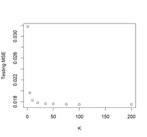
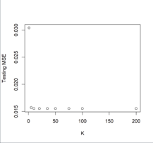
LDA
We then went on to try LDA and QDA to further predict future All-Stars. LDA assumes that the classes have multivariate normal distributions for the variables. This means that the assumed covariate matrix is the same for all classes. This will lead to simpler, linear decision boundaries which will lead to higher interpretability. As we can see when looking at the histograms of the prediction variables, aside from a few outliers, the variables are fairly close to normally distributed. We can then assume that LDA should perform well when predicting new All-Stars when applied to our new data set. LDA is generally good at finding a balance between model complexity and performance when the classes have multivariate normal distributions, and this seems to be the case for the minor league datasets.
Training MSE Pitching = 0.0155
Training MSE Batting = 0.0161
QDA
We also employed QDA coupled with PCA to model the classification of All-Star outcomes in our dataset. QDA differs from LDA because it does not have the assumption that the classes have the same covariate matrix so this can lead to complex decision boundaries and better predictive performance. The decision to utilize QDA stemmed from the recognition that our data set may have potential differences in the spread and distribution of data points between the two classes. Prior to applying QDA, we employed PCA to reduce the collinearity that was present within some of the data. We expected this may be the case, as some of the variables were combinations of other rates we utilized, such as OPS = OBP + SLG, but performing PCA to find the most significant predictors allowed QDA to perform more accurately. By transforming the original predictors into a lower-dimensional subspace of principal components, PCA helped mitigate issues related to multicollinearity and computational complexity, thereby enhancing the performance of the QDA model.
Training MSE Pitching = 0.0154
Training MSE Batting = 0.0130
Trees/Random Forests
We tried to implement a decision tree on the data to see if there was any way that it could help with the classification imbalance. We thought that this could be the case because the way that trees are built should implicitly solve a data imbalance. It is dividing based on the outcome using the variables, but instead the basic non-pruned tree did not have many levels and instead returned no All-Star for every classification. Then to see if a more complex dataset would provide valid predictions, we then tried random forests. We found that random forests were able to classify some players as future All-Stars and so we implemented them on our dataset. Random forests are useful for classification problems with large data sets. They are not susceptible to outliers and are a more versatile way to make predictions, this is important because as can be seen in the histograms, there are some outliers in our dataset. Random forests are similar to KNN, but it uses the general training population statistics to make divides rather than just looking at the nearest neighbors of the new data point. For the batting and pitching data, we tried all possible values for the mtry values in the random forest function to compare the predictions and ensure that the best model is used for the final predictions. As can be seen in the training MSE this model does seem to overfit especially for the pitching data. This will affect how we interpret the results from these models.
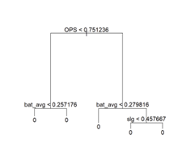
RF1 Pitching Training MSE = 0.003
RF2 Pitching Training MSE = 0
RF3 Pitching Training MSE = 0
RF4 Pitching Training MSE = 0
RF5 Pitching Training MSE = 0
RF1 Batting Training MSE = 0.0002
RF2 Batting Training MSE = 0.0001
RF3 Batting Training MSE = 0.0001
RF4 Batting Training MSE = 0.0001
RF5 Batting Training MSE = 0.0001
GBM
GBMs are known to be quite adept at finding and exploiting non-linear relationships in predictions. It was used for this dataset to make sure that we were accounting for non linear relationships using a complex model. GBMs make sequential trees, with each one correcting the errors made in the previous ones. GBMs can capture unique relationships between the data because it learns with each iteration it takes. This is helpful when tackling the large dataset of minor league players. GBMs sacrifice a level of interpretability for a high level of predictive performance and we wanted to include this model to ensure we were not losing out on the predictive performance it offered. We wanted a model that learns from its mistakes and will try to find the best predictive performance so we included GBMs.
Pitching Training MSE = 0.0133
Batting Training MSE = 0.0130
Analysis & Interpretation
Across all of our models, there were 75 batters total who were predicted at least once to make it to an All-Star game. The model that predicted the most batters was QDA with 36, whereas kNN (with k = 10) predicted the least with only 5. Christian Encarnacion-Strand and Elias Medina were predicted by the most models, with 7 predictions total. 5 batters were predicted by 6 models, 1 batter by 5 models, 8 by 4, 7 by 3, 5 by 2, and 47 by 1. If we combine the predictions made by kNN, k = 5 and k = 10, as well as all of the random forest predictions, giving each batter 1 prediction each if they were predicted by any iteration of kNN or random forest, the most times any batter was predicted by a model was 4, and it was 6 different batters. These batters were Brian Kalmer, Easton Shelton, Ralphy Velazquez, Rayner Arias, Ross Friedrick and Seiya Suzuki. 8 batters were predicted by 3 models, 12 batters by 2 models, and 49 by 1. Generally across the data, the percentage of batters in our training data that did go on to appear in an All-Star game was about 1.75%. The percentage of batters who were predicted by at least 1 model out of the new data was about 1.94%, but the average prediction percentage across the models was only 0.35% (and 0.45% when we combine the kNN and Random Forest models as described earlier). The model with the most predicted batters, which was QDA, still only predicted about 0.92% of batters to eventually make it to an All-Star game, which is only a little more than half of the actual percentage in our training.
As for the pitchers, the models were much less successful at providing any potential future All-Stars. There were only 23 pitchers who were predicted by at least 1 model to make it to an All-Star game, and only one of which, Mason Miller, was predicted by more than 1 model. He was predicted by all 5 iterations of the Random Forest, as well as by the GBM model. QDA predicted the most pitchers with 11, and kNN (where k = 5) was close behind with 10. GBM predicted 2 pitchers, all 5 iterations of Random Forest only predicted Mason Miller, and the LOGIT, PROBIT, LDA, and kNN (with k = 10) predicted none. Across the data, the percentage of pitchers in our training data that appeared in an All-Star game was about 1.55%. The percentage of pitchers who were predicted out of the new data by at least 1 model was about 0.59%, and the average prediction percentage across the models was only 0.06% (and 0.08% when we combine the kNN and Random Forest models as described earlier). The model with the most predicted pitchers, which was also QDA, still only predicted about 0.26% of pitchers to eventually make it to an All-Star game, which is still only a fraction of the actual percentage in our training.
Despite these proportions not looking exactly how we hoped they would, there is some promise in the fact that, specifically with the batters, a decent amount of the same players were predicted to make an All-Star appearance by more than 1 model. As for the pitchers, their statistics are much more dependent on the batters they are pitching to than vice versa, so it isn’t necessarily surprising that the models weren’t as successful at predicting a higher percentage of pitchers, or similar pitchers across different models.
Conclusion
The results of this study show that there may be some predictive accuracy in predicting All-Star appearances using minor league data. The ability for the models to produce an outcome was better for the batters than for the pitchers, but the training MSE was lower for the pitching dataset. It was much less likely for the pitching models to predict All-Stars because there may not have been enough data to distinguish All-Stars from non-All-Stars for pitchers. It was much more likely for hitters to be predicted as future All-Stars and most of the players predicted by the models to be future All-Stars are some of the brightest young talents in the major leagues right now. Mason Miller is likely to become an All-Star this year and he was the player most predicted as a pitching All-Star. Seiya Suzuki is a great player and could also possibly become an All-Star this year. A lot of the players that the models predicted are mainly in the minor leagues still, but this would be helpful to the major league teams because they can get the minor league players at a better price than trying to trade for the players that are already major leaguers. While these models do predict many All-Stars correctly, it is important to acknowledge that factors such as injury can affect a player’s career and keep them from fulfilling their potential. By using these stats, we hope to find basic trends in data that are able to help predict the potential of a player to become an All-Star. This sort of data analysis underscores the future of baseball decision-making. Teams will have access to large amounts of data and will try to gain as much knowledge from it as possible, while being in competition with the other teams. Another interesting implementation of this project would be to use more advanced statistics that we did not have access to, such as WAR, wRAA, wOBA, or wRC+ for batters and WAR, xFIP, ERA+, or HR/FB rate for pitchers. These advanced statistics are designed to evaluate a player holistically which may lead to better predictive performance.